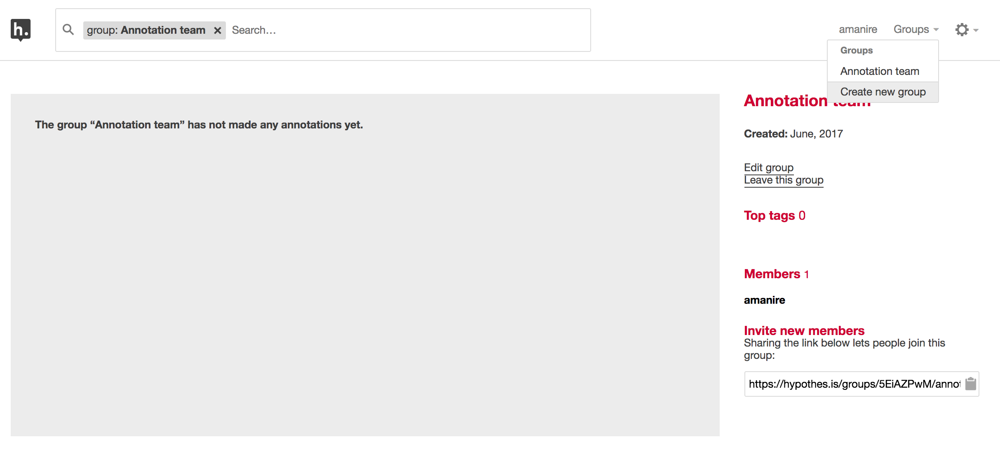
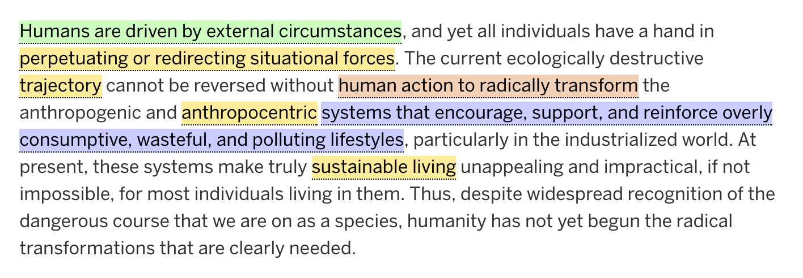
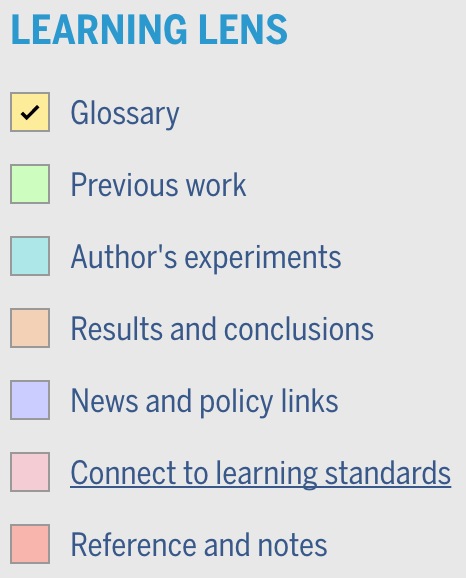
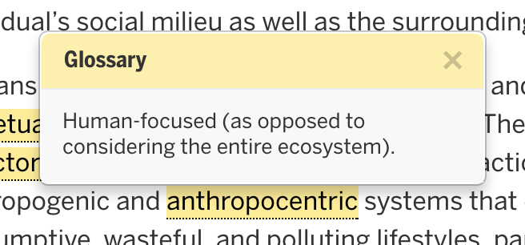
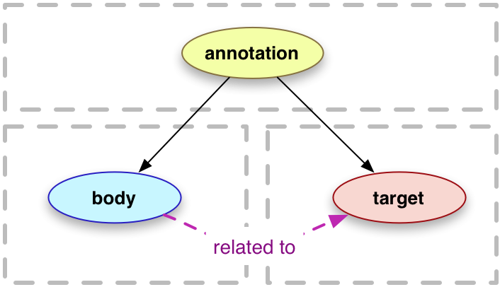

Designing with Web Annotations
Aaron Manire
amanire.github.io/web-annotations
Medium
Genius
(formerly Rap Genius)
Hypothesis
Quick Demo
Highlight Markup
A
new open layer
is being created over all knowledge.
Hypothesis Groups
h web app
Science in the Classroom
Learning Lens Module
- Configures variables
- Attaches Hypothesis annotations
- Modifies highlighting
- Adds legend block
- Generates modal popups
- Supports legacy annotations
(You don't want it)
Configure variables
- Source Hypothesis account
- Canonical domain
- Associated content type(s)
- Taxonomy mapping (removed)
Attach annotations
Modify highlights
Using mark element
anthropocentric
Modify highlights
Mark element data
anthropocentric
Modify highlights
Apply Learning Lens style rules
<mark id="hypothesis-diS-7A5jEeeVAp9JlVp1Ew" data-hypothesis="{"id":"diS-7A5jEeeVAp9JlVp1Ew","user":"beyondroots","exact":"anthropocentric","text":"Human-focused (as opposed to considering the entire ecosystem). ","prefix":"transform the anthropogenic and ","tags":"Glossary"}"
class="hypothesis_annotation llens-6">
anthropocentric
</mark>
Learning Lens Legend block
Learning Lens Legend block
Shows/hides highlighted text based on tag
<mark id="hypothesis-diS-7A5jEeeVAp9JlVp1Ew" data-hypothesis="{"id":"diS-7A5jEeeVAp9JlVp1Ew","user":"beyondroots","exact":"anthropocentric","text":"Human-focused (as opposed to considering the entire ecosystem). ","prefix":"transform the anthropogenic and ","tags":"Glossary"}"
class="hypothesis_annotation llens-6 show-annotation">
anthropocentric
</mark>
Modal popups
qtip2.com jQuery plugin
I absolutely love how the SitC team has gone out of their way to provide a resource that is authentic, and unchanged, but scaffolded and supported in ways that 9th-12th grade students can still benefit.
— The Ed Tech Round Up
W3C Specification
February 23, 2017
Three Recommendations to Enable
Annotations on the Web
W3C Specification
- Data Model
- Vocabulary
- Protocol
Web Annotation Data Model
The W3C architecture provides for a model where annotations live separately from documents and are reunited and reanchored in real-time whenever the relevant document is present. The benefit of this is that annotations now come under the control and election of the user, rather than at the sole discretion of the publisher.
— Dan Whaley, founder/CEO of Hypothesis
Thank you
amanire.github.io/web-annotations
Aaron Manire